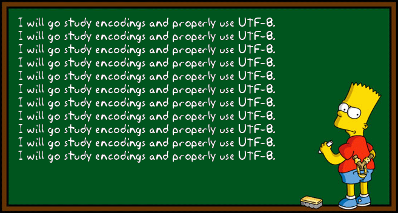

The charset element
The various standards of character encoding
UTF-8 is the dominant character encoding standard in use for HTML.
The W3C recommends UTF-8 as the default encoding for XML and HTML.
Shift JIS is the 2nd most popular and is focused on the Japanese language.
GB 2312 is the 3rd most popular and is the official character set of the People's Republic of China.
While UTF is capable of displaying the characters of all languages, some nations still encourage or mandate the use of language specific standards. Culturally influenced writing tools are not so quickly discarded amongst all nations, especially not for millenias old cultures such as China that see their writing system as a part of their cultural identity.